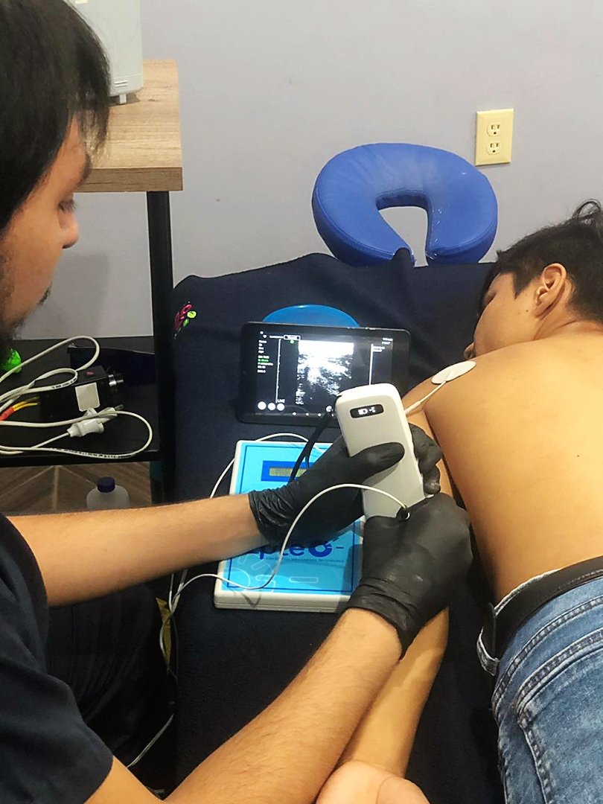
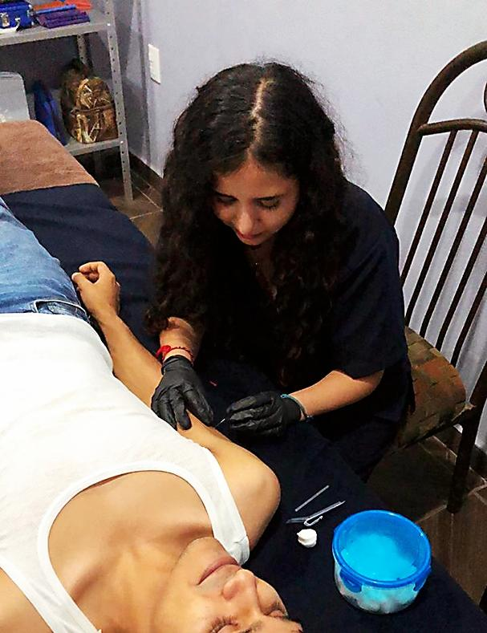

JL CLINIC
El dolor es inevitable pero el sufrimiento es opcinal

Licenciado en Fisioterapia y Rehabilitación
Jaciel Núñez
- Amplia experiencia en fisioterapia invasiva y electroterapia avanzada en el manejo del dolor.
- Amplio conocimiento en fisioterapia oncológica.
- Amplia experiencia en fisioterapia deportiva.
- Amplia experiencia en el manejo del dolor en pacientes con afectación nerviosa.
Cursos y certificaciones
- Certificación internacional en neuro modulación percutánea por inbiotem españa.
- Certificación internacional en punción seca método drynstim.
- Certificación internacional en EPTE (electrolisis percutánea terapéutica).
- Certificación en ecografía musculoesquelética.
- Certificación en neurodinamia y movilización neuromeníngea.
- Certificación en el método dosage.
- Curso en neurociencia del dolor.
- Curso de electroterapia funcional especializada.
- Congreso internacional de fisioterapia deportiva y juegos olímpicos.

Licenciada en Terapia Física
Lizeth Perez
- Amplia experiencia en terapia manual instrumentada y fisioterapia oncológica.
- Amplia experiencia en el manejo del dolor miofascial con procedimientos invasivos
y no invasivos.
- Amplia experiencia en terapia manual.
- Amplia experiencia en electroterapia avanzada.
Cursos y certificaciones
- Certificación internacional en hands pro "terapia manual instrumentada".
- Certificación en electroterapia avanzada en rehabilitacion.
- Certificación en punción seca y electro punción.
- Curso de fisioterapia en oncología.
- Curso de evaluación y reeducación de la función que equilibran
sistemas de integración postural de la persona mayor.